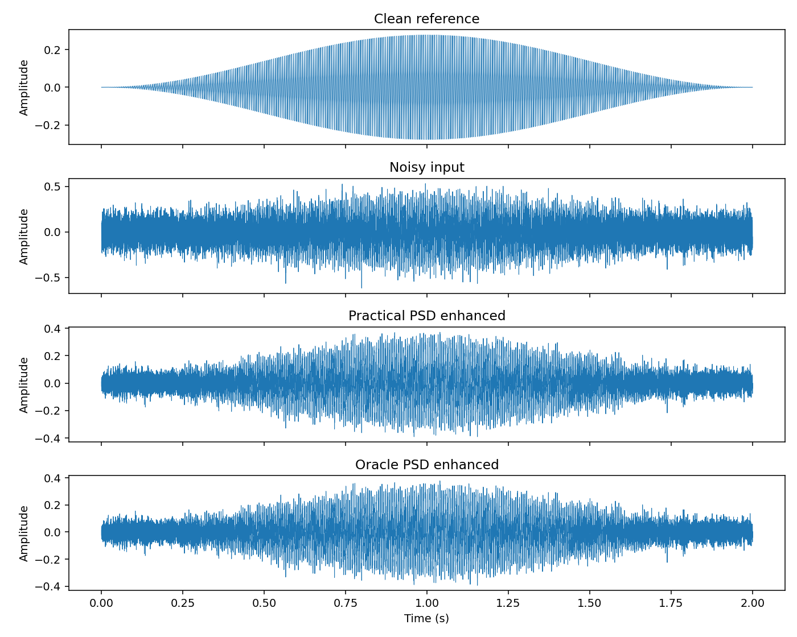
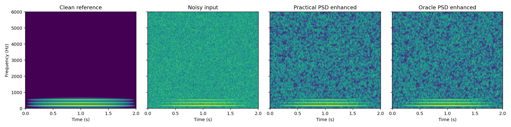

Speech Enhancement versus Speech Recognition
Evaluating STFT Wiener Filtering Under Noise | Xinyu Shen · SID 530537427
Research question
Does Wiener filtering that improves the numerical SNR of speech also improve its intelligibility and speech-recognition accuracy? How does imperfect noise-spectrum estimation affect this relationship?
Current implementation
A reproducible Python prototype includes controlled noise mixing, STFT, spectral noise PSD estimation, Wiener gains, inverse STFT, and visualisation. Two PSD modes are compared: practical (independent noise-only calibration) and oracle (exact added noise). Figures below are from a synthetic harmonic-signal test, not measured speech-recognition results.

Clean, noisy, practical-enhanced and oracle-enhanced signals
Spectrogram comparisons (synthetic test)Next steps
Use transcribed LibriSpeech and DEMAND noise at −5, 0, 5 and 10 dB. Evaluate SNR, STOI and the WER of a fixed pretrained Whisper model, then inspect cases where SNR and WER disagree. No training of Whisper is planned.
Code and documents
View GitHub repository and reproducibility instructions
Status: first DSP demonstration complete; real-speech STOI and WER results have not been collected yet.